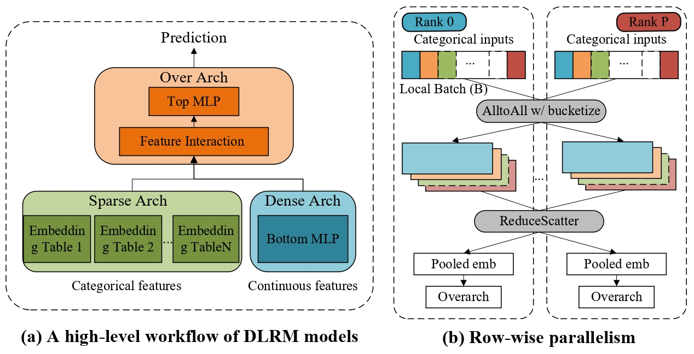

Background
Deep Learning Recommendation Models (DLRMs) are the backbone of modern personalization and advertising platforms. Deployed at massive scale with embedding tables containing billions of entries, understanding how DLRMs scale is essential for both accuracy and system efficiency. Unlike transformer-based LLMs where dense compute dominates, DLRMs are fundamentally embedding-heavy: the vast majority of parameters reside in large embedding tables that can reach hundreds of gigabytes or even terabytes in industrial settings.
DLRM Architecture and Row-wise Parallelism (RP)

Recent studies have demonstrated that DLRMs can benefit from scaling laws similar to LLMs - with redesigned architectures, scaling up parameters yields predictable accuracy gains. However, this scaling potential is severely constrained by system-level bottlenecks unique to DLRMs :
Memory Wall Challenge
Embedding tables dominate model size and memory usage, quickly saturating GPU memory even with modern hardware. This becomes the primary bottleneck when attempting to scale DLRMs further.
Communication Wall Challenge
Row-wise parallelism (RP), the standard approach for distributing large embedding tables across GPUs, introduces significant communication overhead through reduce-scatter and all-gather collectives that transmit large amounts of redundant data.
System-Scaling constraints
Unlike LLMs, naive parameter scaling in DLRMs delivers little or no returns. The embedding-heavy nature means that scaling laws only emerge when memory and communication bottlenecks are carefully addressed through system-aware design.
These challenges motivate a system-aware perspective on DLRM scaling laws - one that breaks both memory and communication bottlenecks through aggressive embedding compression and sparsity-aware parallelism to enable continued scaling of recommendation models.